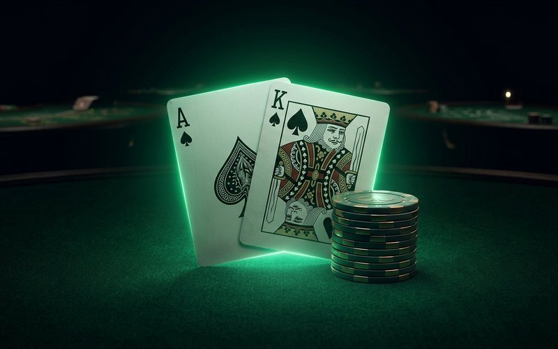

A blackjack for MYBC with two modes in one game. Single hand is the focused, classic duel against the dealer. Multi-hand opens three boxes at once, the way real tables let one player run several bets, and solves the hard part: making whose-turn-is-it unmissable on a phone.

BLACKJACK Table game · Single & multi-handThe two modes share one dealer, one rule set, one design system, but they serve different players. Single hand is blackjack as a conversation: one bet, full attention, big cards, room for the ritual. Multi-hand is blackjack as a session: three boxes, three bets, decisions arriving in sequence. The mode switch lives on the table itself, not buried in settings, because it's a mood choice players make round to round, not a preference they set once.
Designing both from one system kept them honest: every component, the chip tray, the action bar, the hand-value pips, the settlement animations, works identically in both modes. Single hand is not a separate game; it's the multi-hand table with two boxes closed.
Three boxes triple the fun and triple the state: three bets, three hands, three sets of decisions against one dealer. The failure mode is confusion, acting on the wrong hand, missing that a box already stood, not noticing the dealer moved on. The multi-hand interface is organized around one question: which seat is live right now?
The live box scales up and lights its border; the others dim and shrink. The action bar (hit, stand, double) is physically attached to the live box, not floating at screen bottom, so a mis-tap on the wrong hand is structurally impossible. Finished boxes show their result inline and stay visible: the table never hides your other bets from you.
Cards deal in real casino order, first card to each box, then the dealer, then the second round, because players who know blackjack notice when the ritual is wrong. Hand values update on the card, not in a side panel. The dealer's hole card flips with deliberate timing, and payouts settle box by box so a three-seat round ends as three separate stories rather than one summary toast.
Each box celebrates or loses on its own. A push on seat one shouldn't mute a blackjack on seat three.
One "you won 12" toast is efficient and lifeless. It also hides which decisions made money, which is exactly what multi-seat players study.
v2 takes on the genuinely hard interaction: split and insurance inside multi-hand, where a single box can fork into two hands without breaking the whose-turn clarity the game is built on.